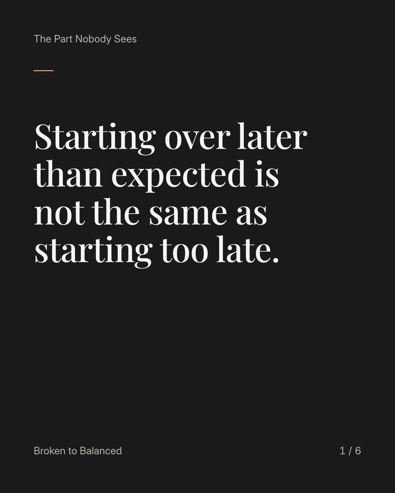
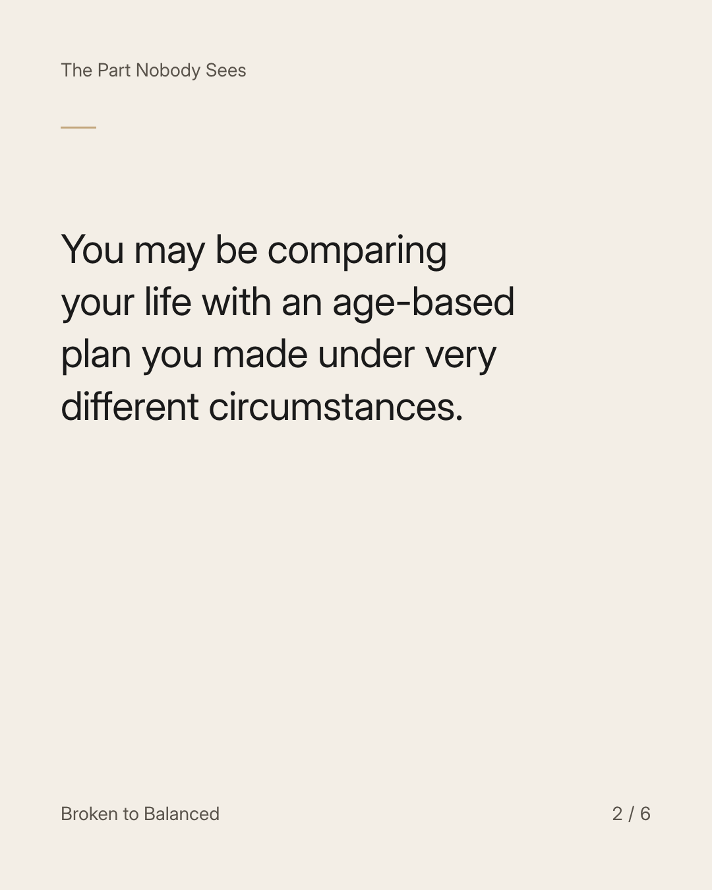
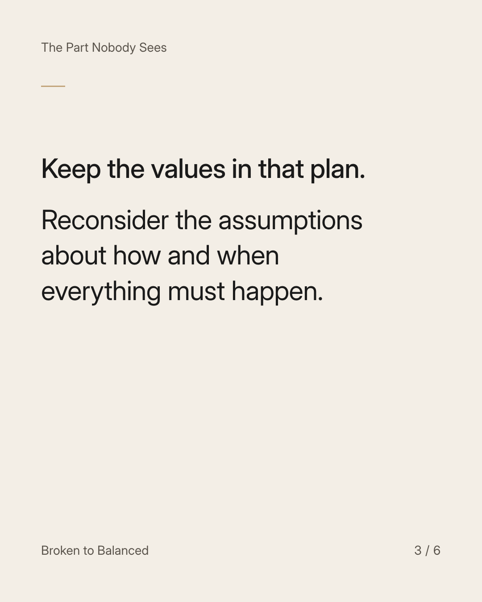
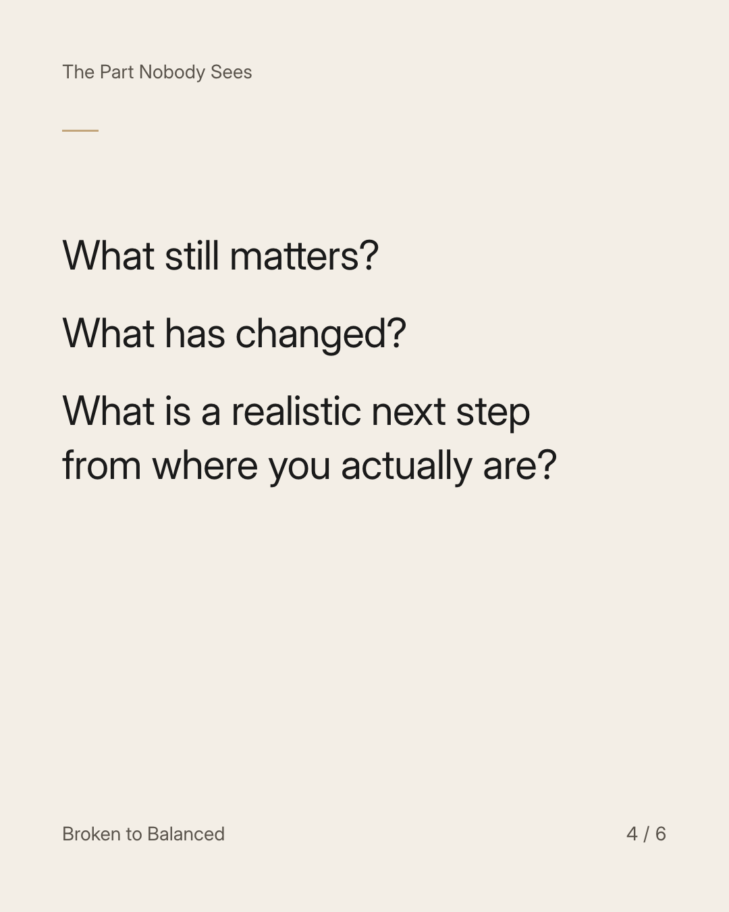
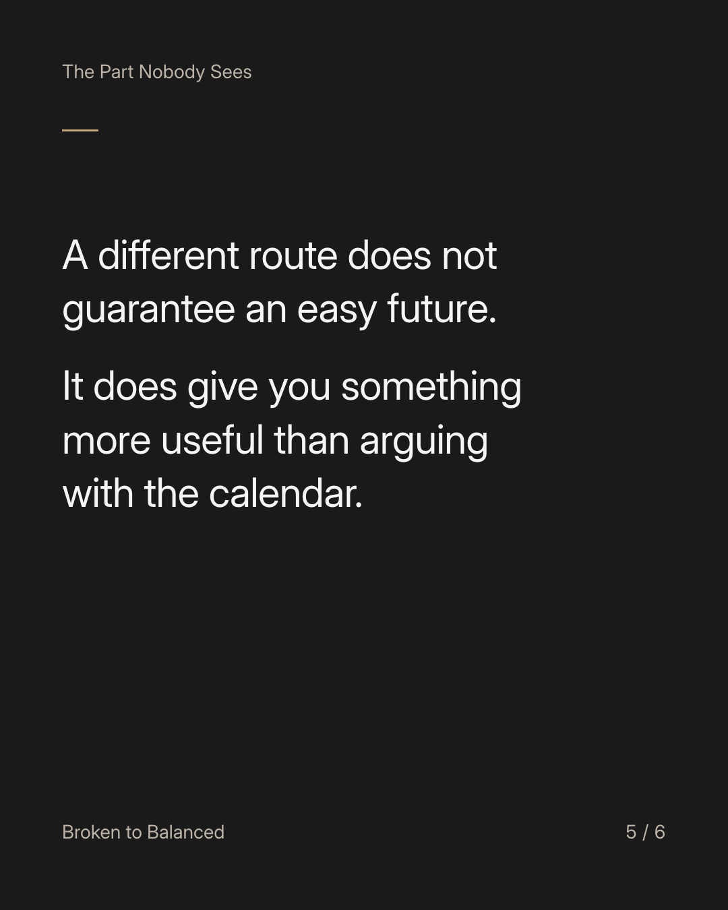
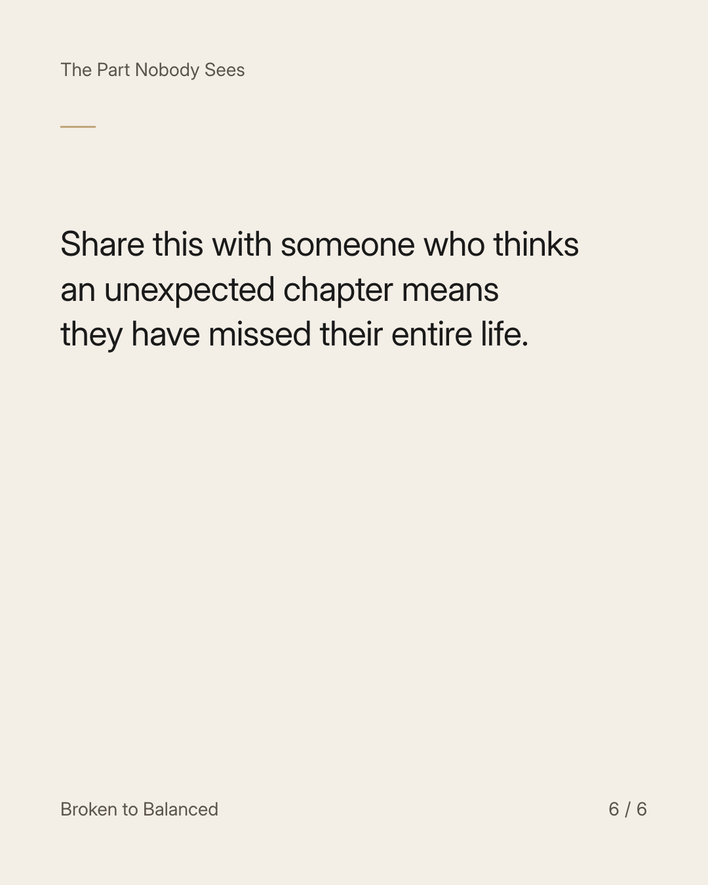

Exact text and accessibility text
Starting over later than expected is not the same as starting too late.
Slide 1 of 6. Starting over later than expected is not the same as starting too late.


Exact text and accessibility text
You may be comparing your life with an age-based plan you made under very different circumstances.
Slide 2 of 6. You may be comparing your life with an age-based plan you made under very different circumstances.


Exact text and accessibility text
Keep the values in that plan. Reconsider the assumptions about how and when everything must happen.
Slide 3 of 6. Keep the values in that plan. Reconsider the assumptions about how and when everything must happen.


Exact text and accessibility text
What still matters? What has changed? What is a realistic next step from where you actually are?
Slide 4 of 6. What still matters? What has changed? What is a realistic next step from where you actually are?


Exact text and accessibility text
A different route does not guarantee an easy future. It does give you something more useful than arguing with the calendar.
Slide 5 of 6. A different route does not guarantee an easy future. It does give you something more useful than arguing with the calendar.


Exact text and accessibility text
Share this with someone who thinks an unexpected chapter means they have missed their entire life.
Slide 6 of 6. Share this with someone who thinks an unexpected chapter means they have missed their entire life.
Exact caption
Plain-text fallback: select and copy the caption.